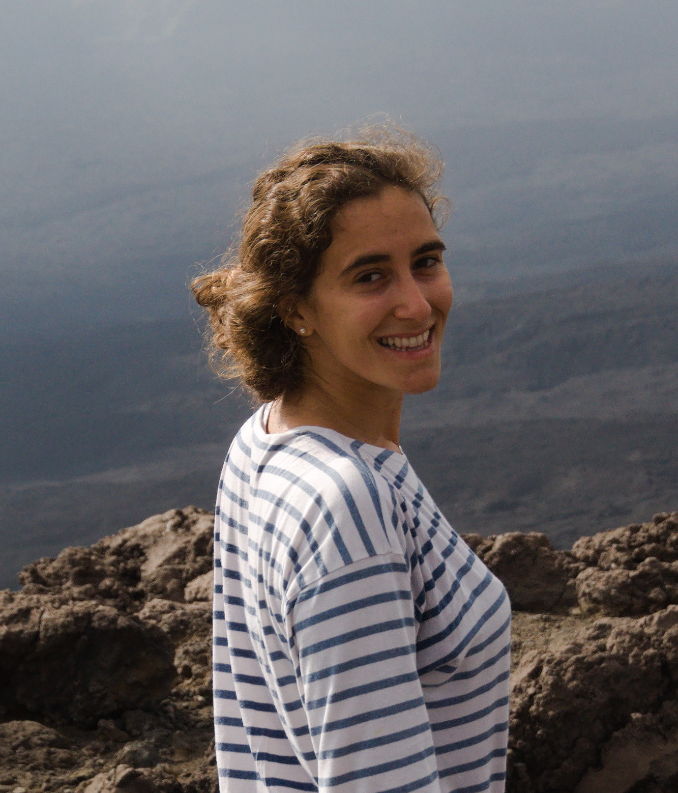
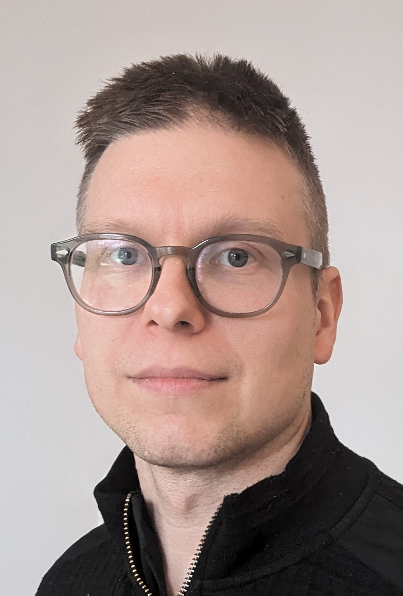

Thirteenth Symposium on Compositional Structures (SYCO 13)
The Symposium on Compositional Structures is a series of interdisciplinary meetings aiming to support the growing community of researchers interested in the phenomenon of compositionality, from both applied and abstract perspectives, and in particular where category theory serves as a unifying common language. We welcome submissions from researchers across computer science, mathematics, physics, philosophy, and beyond, with the aim of fostering friendly discussion, disseminating new ideas, and spreading knowledge between fields. Submission is encouraged for both mature research and work in progress, and by both established academics and junior researchers, including students.
Submission is easy, with no format requirements or page restrictions. The meeting does not have proceedings, so work can be submitted even if it has been submitted or published elsewhere. You could submit work-in-progress, or a recently completed paper, or even a PhD or Masters thesis.
While no list of topics could be exhaustive, SYCO welcomes submissions with a compositional focus related to any of the following areas, in particular from the perspective of category theory:
- logical methods in computer science including classical and quantum programming, type theory, concurrency, natural language processing, and machine learning;
- graphical calculi including string diagrams, Petri nets, and reaction networks;
- languages and frameworks including process algebras, proof nets, type theory, and game semantics;
- abstract algebra and pure category theory including monoidal category theory, higher category theory, operads, polygraphs, and relationships to homotopy theory;
- quantum algebra including quantum computation, and representation theory;
- tools and techniques including rewriting, formal proofs and proof assistants, and game theory;
- industrial applications including case studies, and real-world problem descriptions
This new series aims to bring together the communities behind many previous successful events which have taken place over the last decade, including Categories, Logic and Physics, Categories, Logic and Physics (Scotland), Higher-Dimensional Rewriting and Applications, String Diagrams in Computation, Logic and Physics, Applied Category Theory, Simons Workshop on Compositionality, Yorkshire and Midlands Category Theory Seminar, and the Peripatetic Seminar in Sheaves and Logic.
This event follows SYCO 1 in Birmingham, SYCO 2 in Strathclyde, SYCO 3 in Oxford, SYCO 4 in California, SYCO 5 in Birmingham, SYCO 6 in Leicester, SYCO 8 in Tallinn, SYCO 9 in Como, SYCO 10 in Edinburgh, SYCO 11 in Palaiseau, and SYCO 12 in Birmingham.
Invited speakers
|  |  |
| Elena Di Lavore | Martti Karvonen |
| University of Oxford | University College London |
| Partial Markov categories | What’s going on with categorical composable cryptography? |
Important dates
All deadlines are 23:59 anywhere-on-earth on the given dates.
Submission deadline: Friday 14 March (extended)Author notification: Friday 4 AprilIn-person registration deadline: Saturday 12 April- Symposium dates: Thursday 24 April and Friday 25 April 2025
Registration
In-person registration is closed, but you can still register to attend online by filling in the following form: SYCO 13 Registration Form
Accepted talks
-
Mika Bohinen and Paolo PerroneCategorical algebra of conditional probability
-
Clémence Chanavat and Amar HadzihasanovicDiagrammatic (∞,n)-categories
-
Chris Purdy and Stefania DamatoDistributive Laws of Monadic Containers
-
Fatimah Rita AhmadiTyping Tensor Calculus in 2-Categories
-
Jake Araujo-SimonCompositional Nonlinear (Audio) Signal Processing with Volterra Series
-
Thea LiThe Category of Finite Dimensional Operator Spaces
-
Nick Hu, Alex Rice, Calin Tataru and Dan Ghicasd-visualiser: interactive hypergraph visualisation for programs as string diagrams
-
Max Demirdilek and Christoph SchweigertSurface Diagrams for Frobenius Algebras and Frobenius-Schur Indicators in Grothendieck-Verdier Categories
-
Thibaut Benjamin, Ioannis Markakis, Wilfred Offord, Chiara Sarti and Jamie VicaryNaturality for higher-dimensional path types
-
Filippo Bonchi, Cipriano Junior Cioffo, Alessandro Di Giorgio, Elena Di LavoreTape Diagrams for Monoidal Monads
-
Razin Shaikh, Lia Yeh and Stefano GogiosoThe Focked-up ZX Calculus: Picturing Continuous-Variable Quantum Computation
-
Muhammad Hamza Waseem, Caterina Puca, Lia Yeh, Selma Dündar-Coecke, Bob Coecke, Aleks Kissinger, Stefano Gogioso, Sieglinde Pfaendler and Thomas CervoniTeaching Quantum Theory with a Compositional Lens: Experimental Evidence Supporting the Effectiveness of Quantum Picturalism
-
Morgan RogersBuilding models from finite pieces
-
Tiffany DuneauA Compositional Approach to Reading Comprehension Tasks Using the DisCoCirc Natural Language Processing Framework
Schedule
All times are in British Summer Time (UTC+1).
Thursday 24 April
The talk will provide an overview of our pedagogical experiment, the subsequent developments in the education and policy sectors, and the future prospects of the QP education programme. It will also include examples of QP educational material, highlighting how quantum ideas are expressed and communicated through a compositional lens. We hope this talk will showcase the merits and potential of the compositional turn in quantum physics, especially in pedagogy.
In this paper, we develop a surface-diagrammatic calculus for Grothendieck-Verdier categories, extending the string-diagrammatic calculus of Joyal and Street for rigid monoidal categories into a third dimension. This extension naturally arises from the non-invertibility of coherence data in Grothendieck-Verdier categories.
We show that key properties of Frobenius algebras in rigid monoidal categories carry over to the Grothendieck-Verdier setting. Moreover, we introduce higher Frobenius-Schur indicators for suitably finite k-linear pivotal Grothendieck-Verdier categories and prove their invariance under pivotal Frobenius linearly distributive equivalences.
The proofs are carried out using the surface-diagrammatic calculus.
Friday 25 April
If time permits, I will discuss generalisation of this work to cartesian closed bicategories.
We consider how well DisCoCirc models can learn different types of compositional behaviour. We compare both quantum circuit based models, as well as classical neural networks under a series of training paradigms, on a dataset derived from one of the bAbI tasks, extended to test a series of aspects of compositionality.
Both architectures score within 5% of one another on the productivity and substitutivity tasks, but differ for the systematicity and overgeneralisation tasks. Overall, we find the neural models are more prone to overfitting the Train data.
Finally, we inspect the trained models, both by comparing them to manually-constructed perfect compositional models, and by considering how the model components interact with one another, explaining how the models behave and exhibiting the models' compositional understandability.
In this talk I would like to present a topos-theoretic perspective on another piece of model theory, namely Fraissé theory, which provides sufficient conditions for the existence of a special "ultrahomogeneous" model of a theory to exist. This is a model that contains all finite (or finitely generated) models as submodels in a symmetric way, such as the Rado graph.
Usually (in work of Caramello or Kubis, say) the category-theoretic presentation of Fraisse theory again involves automorphism groups, so the main novelty of my presentation will be to show what extra flexibility moving from groups to monoids affords us in the Fraisse construction. This is based on Chapter 6 of my thesis*, which as yet has not been reworked into a published form (so is technically work in progress).
*https://irinsubria.uninsubria.it/retrieve/e2188be8-0f66-4564-e053-6605fe0a49d6/Thesis_caricamento.pdf
In this paper, we develop a characterisation of distributive laws of monadic containers. Distributive laws were introduced as a sufficient condition for the composition of the underlying functors of two monads to also carry a monad structure. Our development parallels Ahman and Uustalu's characterisation of distributive laws of directed containers, i.e. containers whose Set functor interpretation carries a comonad structure. Furthermore, by combining our work with theirs, we construct characterisations of mixed distributive laws (i.e. of directed containers over monadic containers and vice versa), thereby completing the `zoo' of distributive laws from a container perspective.
We have found these characterisations amenable to development of existence and uniqueness proofs of distributive laws, particularly in the mechanised setting of Cubical Agda, in which most of the theory of this paper has been formalised.
Many compilers use graph-based intermediate representations (IRs) of programs internally for the purposes of code generation, program analysis, and optimisation. We show how our methods extend to real-world IRs of programs generated by the LLVM/MLIR compiler toolchain to visualise programs with varying combinations of compiler optimisations applied, providing a tool to explore these graph-based IRs which is formally grounded in categorical semantics.
We implement the correspondence between our notion of hierarchical hypergraph and terms in a traced cartesian closed category, whereby connectivity of hyperedges is translated into a foliation of monoidal terms with explicit copying, deletion, and swapping. Our approach applies computational methods for drawing string diagrams, which is more principled than existing ad-hoc GraphViz-based approaches, allowing us to effectively combine dataflow and control flow with sharing in one aesthetically pleasing picture. Moreover, the interactive nature of our tool allows for collapsing/expanding hierarchical nodes, and iterative refinement for focusing on a particular region of interest within a large program delineated by hypergraph connectivity.
For more information, please see https://github.com/sd-visualiser/sd-visualiser.
A web version of the tool can be accessed at: https://sd-visualiser.github.io/sd-visualiser/
Local information
Talks will take place on the main campus of University College London, in Lecture theatre G01, located at 66-72 Gower St, London WC1E 6EA.
The event is catered. Coffee, tea and snacks will be offered during coffee breaks. At lunch, there will be a choice of sandwiches and cold dishes catering to different dietary requirements.
Transport
Tube
The closest tube stations to UCL sites are Russell Square (Piccadilly line), Euston (Northern and Victoria lines), Euston Square (Hammersmith and City, Metropolitan and Circle lines), and Warren Street (Northern and Victoria lines). More information and a journey planner can be found at www.tfl.gov.uk/tube.
You can also find directions from these stations to UCL locations: Russell Square Station, Euston Station, Euston Square Station, Kings Cross Station, Warren Street Station.
By Bus
UCL is served by many Transport for London bus routes. There are several lines (e.g. 68, 91) travelling North-South with stops near Russell Square, and bus lines (e.g. 18, 30) travelling East-West with stops at Euston station. More information and a journey planner can be found at www.tfl.gov.uk/buses.
By National and International Rail
London has many mainline rail stations. Most of these are a short journey away from UCL, with the stations at Euston, King’s Cross and St Pancras being within easy walking distance (10-15min). See www.nationalrail.co.uk for more information.
For travel outside of the UK, there are trains from St Pancras to France (Paris, Lille), Belgium (Brussels), and the Netherlands (Amsterdam, Rotterdam). See wwww.eurostar.com.
By Air
Below are directions to UCL from London’s five main airports. There are bus and taxi alternatives from each of the airports. Details of trains from airports to central London can also be obtained from National Rail at www.nationalrail.co.uk.
- From Heathrow. By London Underground (Piccadilly Line), to Russell Square or King’s Cross/St. Pancras. Journey time around 1 hour. Alternatively, by Heathrow Express, to Paddington station. Journey time 15 min. See www.heathrowexpress.com for more information and fares. From Paddington take the London Underground (Hammersmith & City, Metropolitan or Circle Lines) to Euston Square. Journey time 10 min.
- From Gatwick.Gatwick Express to Victoria station. Journey time 30 minutes. See www.gatwickexpress.com for more information and fares. From Victoria take the Tube (Victoria Line) to Euston. Journey time 10 min. Alternatively, take the Thameslink to St Pancras International station. Journey time 45 min (+ 15 min walk from St Pancras). You can also opt for a coach service to central London. See the Victoria Coach Station website for further details (www.tfl.gov.uk/coaches).
- From Stansted. Stansted Express to Tottenham Hale station. Journey time 35 minutes. See www.stanstedexpress.com for more information and fares. From Tottenham Hale, take the London Underground (Victoria Line) to Euston. Journey time 15 minutes.
- From Luton. Take the shuttle bus from the airport to Luton Airport Parkway station. From there, catch a train to St Pancras. Journey time 45 minutes. For more information and fares see www.firstcapitalconnect.co.uk.
- From London City Airport. Take the Docklands Light Railway (DLR) from London City Airport Station to Bank. From there, catch the London Underground to Warren Street (Northern Line). Journey time 50 minutes.
Accommodation
There are plenty of hotels in Bloomsbury, near UCL's main campus. Some mid-range suggestions below:- Imperial Hotels (There are six hotels of this chain near UCL.)
- The Thistle Hotel (Bloomsbury Park and Holborn are closest)
- The Radisson Edwardian Grafton Hotel
- The Radisson Edwardian Kenilworth Bloomsbury Hotel
- Grange Hotels
- The Goodenough Club
- The Crescent Hotel
- Premier Inn Kings Cross
Alternatively, there should be several options available on Airbnb. If you choose not to stay near UCL, we recommend making sure your accommodation has good transport links to the venue. London is a large city, and even journeys between central areas can easily take over 40 minutes.
Social activities
Pub social
If you are in London on the evening before the workshop, Wednesday 23 April, please join us from 17:30 at The Marquis of Cornwallis, a pub in Bloomsbury, near UCL.Evening meal
On the evening of Thursday 24 April from 18:30, we will have dinner at Sagar West End, and Indian vegetarian restaurant, near the venue. Note that participants are expected to pay for themselves.Attendees
Attendees marked with an asterisk * will attend physically.
- Alessandro Di Giorgio , TalTech*
- Alexandra Silva , Cornell and University College London*
- Alyssa Renata , Imperial College London*
- Amar Hadzihasanovic , Tallinn University of Technology*
- Amartya Dubey , National Institute of Science Education and Research, India
- Anna Pearson, Quantinuum*
- Antonio Lorenzin , University College London*
- Areeb Shah Mohammed , Universität Innsbruck
- Aven Dauz, University of Strathclyde
- Cheng Zhang , University College London (UCL)*
- Chris Purdy , Royal Holloway, University of London*
- Clovis Eberhart , Tohoku University
- Corina Cirstea , University of Southampton
- Davide Barbarossa , University of Bath
- Dhurim Cakiqi, University of Birmingham*
- Elena Di Lavore, University of Oxford*
- Fabio Zanasi, University College London*
- Fatimah Rita Ahmadi, Imperial College London*
- Fernando Yamauti, Universität Regensburg and Universidade de São Paulo
- Fernando Rosas, University of Sussex
- Finlay McIntyre, University of Edinburgh*
- Gabriel Goren-Roig, Mathematics Department, Universidad de Buenos Aires & Instituto de Ciencias de la Computación, CONICET, Argentina
- Heitor Baldo, Leipzig University
- Jake Araujo-Simon, Cornell Tech*
- James Hefford, INRIA Saclay*
- Jana Nickel, Universität Hamburg
- Jencir Lee, Brief Solutions Ltd
- Jonty Male, University of Manchester*
- KK Che, independent
- Katya Piotrovskaya, University College London*
- Leo Lobski, University College London*
- Maia Woolf, University of Edinburgh
- Malin Altenmüller, University of Edinburgh*
- Mario Román, University of Oxford*
- Martti Karvonen, University College London*
- Mateo Torres-Ruiz, University College London*
- Matthew Pugh, University of Southampton*
- Max Demirdilek, University of Hamburg*
- Mehrnoosh Sadrzadeh, University College London*
- Mika Bohinen, University of Oxford*
- Mina Abbaszadeh, University College London*
- Morgan Rogers, Laboratoire Informatique Paris Nord*
- Muhammad Hamza Waseem, Quantinuum, and the University of Oxford*
- Nayan Rajesh, University of Manchester
- Nesta van der Schaaf, INRIA Saclay*
- Nick Hu , University of Birmingham*
- Paolo Perrone, University of Oxford*
- Paul Wang, ENS-PSL*
- Peter Hines, University of York
- Quan LONG, Sorbonne University*
- Ralph Sarkis, University College London*
- Razin Shaikh, University of Oxford*
- Robert Booth, University of Edinburgh*
- Robin Piedeleu, University College London*
- Stefania Damato , University of Nottingham*
- Thea Li, Inria, LMF, Université Paris-Saclay*
- Thibaut Benjamin, University of Cambridge*
- Tiffany Duneau, Quantinuum*
- Tomáš Gonda, University of Innsbruck*
- Vít Jelínek, University of Sussex*
- Widad Dabbas, Durham University*
- Wojtek Różowski, University College London*
- Yoshihiro Maruyama, Nagoya University*
- Zhixuan Yang, Imperial College London*
Programme committee
- Mina Abbaszadeh, University College London (Chair)
- Robin Piedeleu, University College London (Chair)
- Tai-Danae Bradley, Sandbox AQ and The Master's University
- Corina Cirstea, University of Southampton
- Chris Heunen, University of Edinburgh
- Aleks Kissinger, University of Oxford
- Jean-Simon Pacaud Lemay, Macquarie University
- Martha Lewis, University of Amsterdam
- Jade Master, Glasgow Lab for AI Verification
- Samuel Mimram, École Polytechnique
- Koko Muroya, National Institute of Informatics
- Paolo Perrone, University of Oxford
- Morgan Rogers, University of Sorbonne Paris Nord
- Mehrnoosh Sadrzadeh, University College London (Chair)
- Pawel Sobocinski, Tallinn University of Technology
- Christina Vasilakopoulou, National Technical University of Athens
- Maaike Zwart, IT University of Copenhagen
Steering committee
The symposium is managed by the following people. If you have a general question about SYCO, or if you want to propose to host a future iteration, please get in touch with a member of the steering committee.
- Ross Duncan, University of Strathclyde
- Chris Heunen, University of Edinburgh
- Dominic Horsman, University of Grenoble
- Aleks Kissinger, University of Oxford
- Samuel Mimram, École Polytechnique
- Simona Paoli, University of Aberdeen
- Mehrnoosh Sadrzadeh, University College London
- Pawel Sobocinski, Tallinn University of Technology
- Jamie Vicary, University of Cambridge